Blender VFX · Multimedia 12 · Shot library · 5 lessons · tracking, keying and 3D
PILOT IN AN X-WING.
Track a real camera move, key a pilot off a green screen, and build a 3D fighter around her seat so she flies it at golden hour.
14 illustrated stagesFive lessonsCamera tracking · keying · garbage masks · drivers · materials · bloomPlate: Hollywood Camera Work · Models: Video Copilot
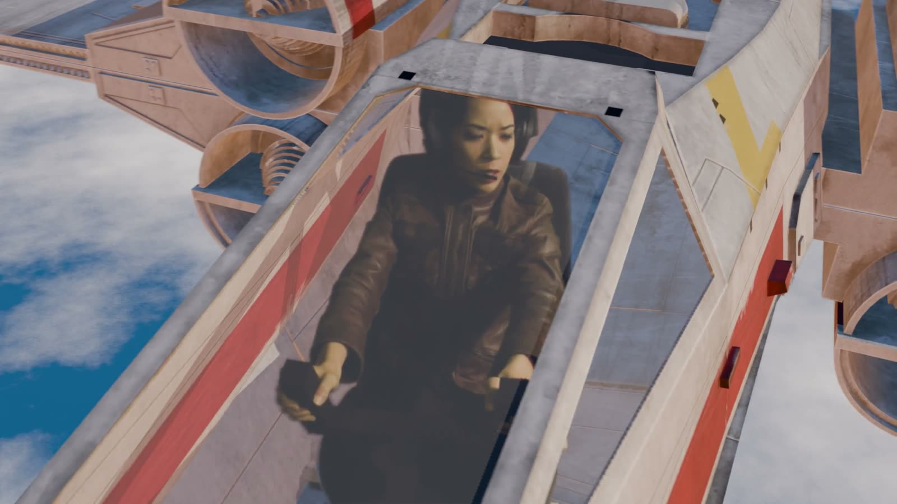
Frame 240 of the demo, made in Blender 5.1 with this tutorial’s steps.
Track. Key. Seat. Fly.
Every screenshot is real Blender, with orange boxes on what to click.
My supports
Turn on any help you want. Your teacher may have set some for you. They change how the guide helps, not what is assessed.
Shot brief
Put the pilot in the fighter.
You are given green-screen footage of a pilot in a studio chair, shot on a moving camera. Deliver a shot where she sits inside a 3D fighter flying above the clouds, then a change of the director’s choosing.
You will hand in
Your solve log (error under 1 px)
Screenshots of your key tree and your driver
The finished shot as an MP4, and the director’s version
A three-decision explanation and credits
Footage, models and credits
The plate is from Hollywood Camera Work: use it and post your results with credit, but do not re-upload the plate. The fighter is from Video Copilot’s free Star Pack; your teacher has the folder.
Studios film actors in a cockpit set or a chair on a stage, track the camera, and build the rest in 3D. Matchmove artists solve the camera, compositors pull the key, and lighting artists make the CG match. You do all three jobs here.
Knowledge first
Why this works.
Camera solving
Markers that stay still in the real world move across the frame as the camera moves. From that movement Blender works out the camera’s path and lens.
Real scale
Floor, origin and scale turn the solve into a world with real metres, so a 12 m ship is the right size around a real person.
Mattes multiply
A key and a hand-drawn mask multiplied together keep only what both agree on.
A card at the right distance
A picture that fills the frame at 1 m still fills it at 3 m if it is 3 times bigger. A driver keeps the card at her distance, so 3D parts in front of it hide her correctly.
Design principles in the shot
Emphasis: the camera rises to her face. Colour: warm light against a cool sky. Movement: sliding clouds and thrusters.
Primary achievement evidence: the director’s change (step 14). Guided steps and supports are recorded separately from achievement. Shot-library option in sprint mm12-26-s08. The registry has no VFX skill IDs yet; see the animation skills proposal.
Session A · Lesson 1 · VFX shot library
Track the studio camera.
The camera on set moved on a dolly. Before anything 3D can sit next to the pilot, Blender has to work out exactly how that camera moved.
TODAYLoad the plate (15 min), place and track markers (35 min), solve (20 min).
01
Load the plate and set the scene
IN SHORTDownload; Movie Clip Editor; Open; Set Scene Frames; Prefetch; camera data.
READ ALOUD
DOCUMENT: The F15 HD Plate image sequence (309 frames, 1280 × 1080) SELECT: Movie Clip Editor TOOLS / ROUTE: Editor type › Movie Clip Editor · Open · Set Scene Frames · Prefetch
Download the F15 HD Plate from Hollywood Camera Work and unzip it into plates/ in your project folder.
New file. Save it as pilot_track.blend. Change the big 3D Viewport to the Movie Clip Editor.
Click Open and choose the first frame (hcw_f0015_hd_plate.0000.png). Blender loads the whole numbered sequence.
In the Clip panel click Set Scene Frames (the timeline becomes 1–309), then Prefetch so it plays smoothly.
Sidebar (N) › Track tab › Camera: Sensor Width 35 mm, Pixel Aspect 1.5. The frames are 1280 wide but are meant to be shown 1920 wide.
The finished demo (real Blender render, 11 seconds, 1080p). Plate: Hollywood Camera Work. Fighter: Video Copilot Star Pack.
Action by action: what to click (orange boxes), and what you should see
1Movie Clip Editor with the plate open. Click Set Scene Frames, then Prefetch. Leave the Tracking Settings as shown: Pattern 41, Search 121, Location, Keyframe, Prepass on.
Click
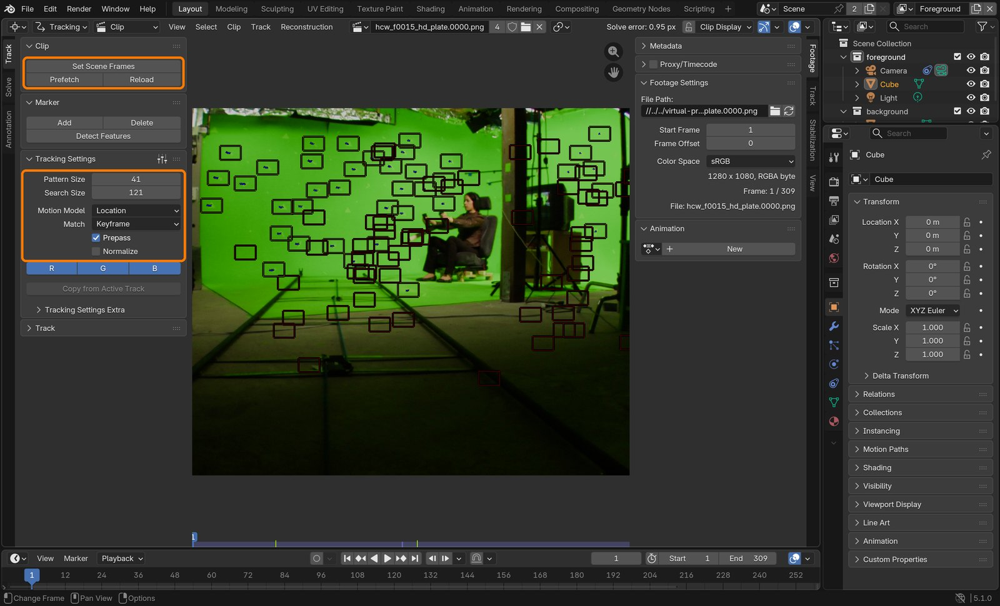
Clip panel (top box) and Tracking Settings (second box). Frame 1 is the wide shot.
STEP CHECKLIST
GLOSSARY
Plate: The live-action footage you add effects to
Pixel aspect: How wide each pixel is drawn; 1.5 here
WHYTracking only works if Blender knows the frame range and how the pixels are shaped. A wrong pixel aspect makes every solve fail.
CHECKThe plate plays from 1 to 309 and the timeline matches.
FIXOnly one frame? You opened a single image: open the first frame of the folder again. Choppy playback? Click Prefetch.
WORKED EXAMPLE · DIFFERENT OBJECTSame steps on any image sequence: a phone video converted to PNGs loads the same way.
STRETCH (AFTER THE CHECK PASSES)Check the plate at frames 1, 150 and 300: what changes about the shot?
Method basis: H1 · B1. Values and sequence are authored for this project.
02
Place markers and track them
IN SHORTCtrl+click markers; Ctrl+T; refill as the shot changes; delete bad tracks.
READ ALOUD
DOCUMENT: Your clip SELECT: Markers on the tape triangles on the walls and floor TOOLS / ROUTE: Ctrl+click to add · Track › Track Markers (Ctrl+T) · backwards Shift+Ctrl+T
Go to frame 1. Ctrl+click the corner of a tape triangle to add a marker. Add 10–12, spread over the walls and the floor.
Do not put markers on the pilot: she moves, so she would ruin the solve. The stands are fine because they stay still.
Select all markers (A) and press Ctrl+T to track forwards. Watch: a marker turns red when it loses its spot.
The camera moves from a wide shot to a close-up, so triangles leave the frame. Every 40 frames or so, add new markers where there are fewer than 8 and track them backwards (Shift+Ctrl+T) and forwards.
Delete any track that jumps to a different triangle (select it, X).
Action by action: what to click (orange boxes), and what you should see
1Frame 150: this is what a tracked shot looks like. Each marker has a short red/blue path. The sidebar Track panel shows the selected marker’s pattern.
Click
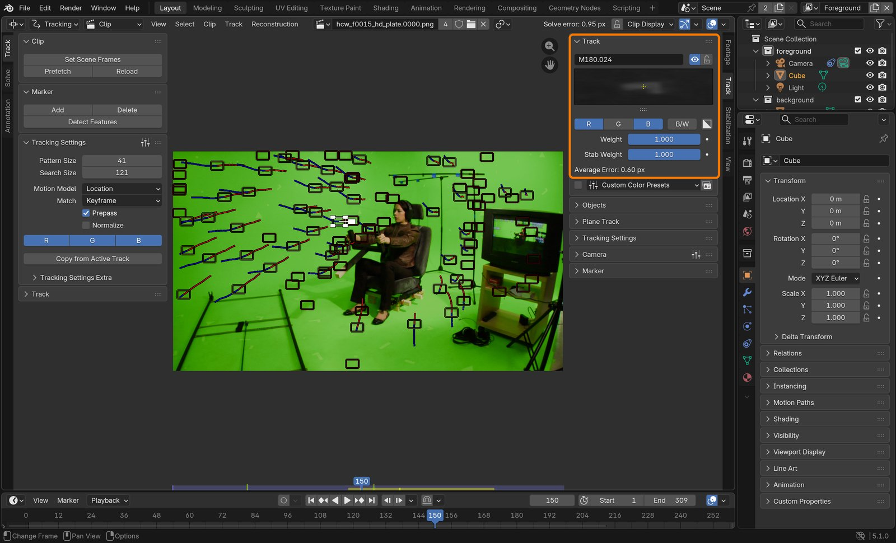
Tracks on the walls and floor, none on the pilot. Average error of the selected track: 0.60 px.
What went wrong when we built the demo: Blender’s automatic “Detect Features” found mostly blurry spots on the green screen, and the first solve was poor. Markers placed on the tape triangles, which are sharp and high-contrast, solved cleanly.
STEP CHECKLIST
GLOSSARY
Track: A marker followed through the frames
Pattern: The small picture Blender searches for in the next frame
WHYThe solver needs at least 8 good tracks on every frame, spread out in depth (wall and floor), to work out where the camera was.
CHECKEvery frame has 8 or more tracks, and their paths are smooth lines.
FIXA track slides off its corner? Make its pattern box bigger (Pattern Size) or delete it and place it on a sharper corner.
WORKED EXAMPLE · DIFFERENT OBJECTOn a phone clip of a desk you would put markers on stickers or corners, never on your hands.
STRETCH (AFTER THE CHECK PASSES)Aim for 60+ tracks in total. The demo used 97.
Method basis: B1. Values and sequence are authored for this project.
03
Solve the camera
IN SHORTSolve tab; keyframes 60 and 160; Refine Focal Length; Solve; Clean Up if needed.
READ ALOUD
DOCUMENT: Your tracks SELECT: Solve tab in the toolbar TOOLS / ROUTE: Solve tab · Keyframe A / B · Refine Focal Length · Solve Camera Motion
Click the Solve tab on the left edge of the toolbar.
Set Keyframe A = 60 and Keyframe B = 160: two frames far enough apart that the camera has clearly moved.
Tick Refine › Focal Length. Nobody wrote down the lens, so Blender works it out.
Click Solve Camera Motion. Read Solve error at the top right of the editor.
Above 1 px? Open Clean Up, set Error to 3, click Clean Tracks, delete the selected bad tracks and solve again.
Action by action: what to click (orange boxes), and what you should see
1Solve tab: Keyframe A 60, B 160, Focal Length ticked, Solve Camera Motion. The result appears top right.
Click
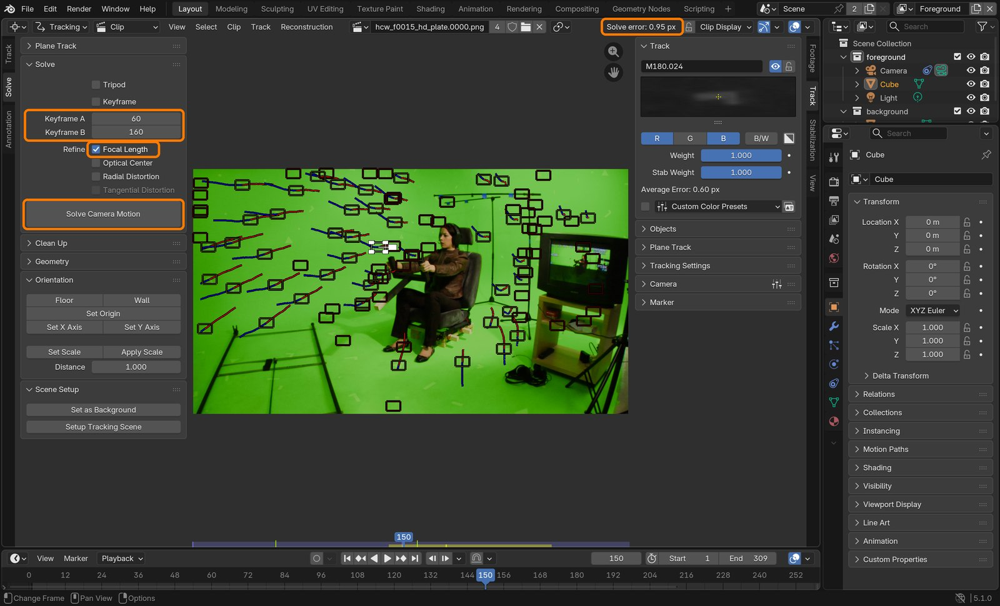
Boxes: keyframes, Refine Focal Length, Solve Camera Motion, and the result: Solve error 0.95 px.
STEP CHECKLIST
GLOSSARY
Solve: Working out the camera’s path and lens from the tracks
Solve error: Average miss in pixels; aim for less than 1
WHYThe solve is Blender’s 3D reconstruction of the real camera. Error is how far, in pixels, the reconstruction misses your tracks: under 1 px is invisible.
CHECKSolve error under 1 px. The demo: 0.95 px, focal length 34 mm.
FIXError in the tens? A few tracks jumped: Clean Up and re-solve. Still bad? Try Keyframe A 40 and B 200.
WORKED EXAMPLE · DIFFERENT OBJECTA phone video solves the same way; enter the phone’s focal length if you know it.
STRETCH (AFTER THE CHECK PASSES)Write your error and focal length in the solve log template.
Method basis: B1. Values and sequence are authored for this project.
Session B · Lesson 2 · VFX shot library
Set the floor, then cut her out.
The solve has no idea which way is up or how big anything is. You tell it, then you remove the green screen and everything else that is not the pilot.
TODAYOrient the scene (20 min), key (25 min), garbage mask and render the key (25 min).
04
Tell Blender where the floor is, where the seat is, and how big things are
IN SHORTSetup Tracking Scene; Floor; Set Origin; Set Scale; check with the test cube.
READ ALOUD
DOCUMENT: pilot_track.blend SELECT: Three floor markers, one seat marker, two far-apart markers TOOLS / ROUTE: Solve tab › Scene Setup › Setup Tracking Scene · Orientation › Floor · Set Origin · Set Scale
Click Setup Tracking Scene (bottom of the Solve tab). Blender adds a camera that follows the solve, a test cube and a floor plane.
Go to frame 100. Shift+click three markers on the studio floor, far apart. Click Floor.
Go to frame 150. Click one floor marker right by her seat. Click Set Origin: the world centre is now under her.
Shift+click two floor markers far apart. Type their real distance in Distance and click Set Scale. (Demo: 3.95 m, worked out from her seated head height of 1.35 m.)
Switch the big editor to the 3D Viewport, look through the camera (Numpad 0) and scale the test cube to 0.12. Scrub the timeline: it should sit on the floor and not slide.
Action by action: what to click (orange boxes), and what you should see
1Frame 100: three floor markers selected (yellow). Then Floor.
Click
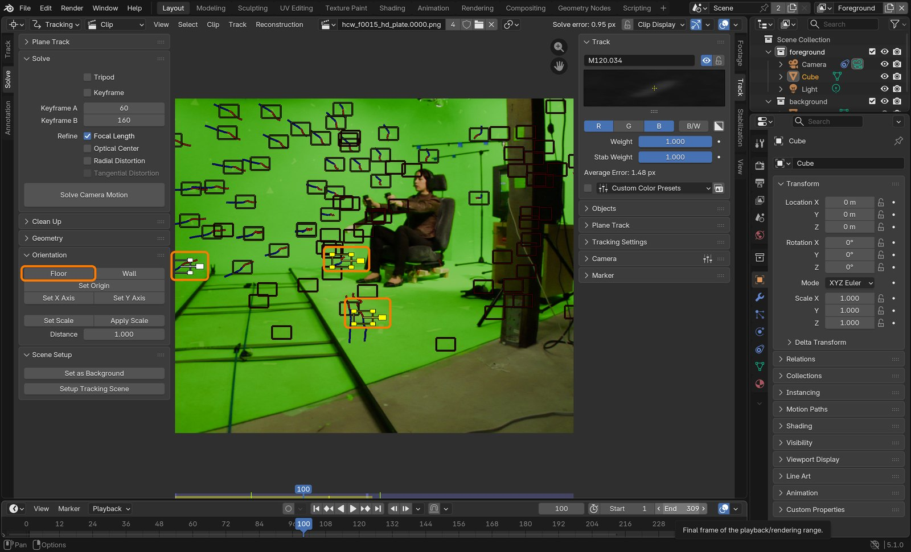
Three floor markers and the Floor button.
2After Floor, Set Origin and Set Scale, the 3D camera view at frame 150.
Click
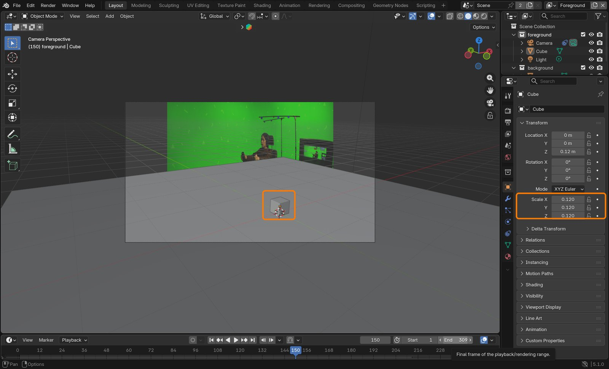
The test cube (scale 0.12) sits on the floor plane, which lines up with the studio floor.
What went wrong when we built the demo: the demo’s numbers came from a script that did the same three jobs (fit the floor, put the origin under the seat, scale from her height). We then pressed the real buttons for these screenshots and got the same floor.
STEP CHECKLIST
GLOSSARY
Origin: The 0, 0, 0 point of the 3D world
Scale: How many Blender metres equal one real metre
WHYFrom here on, “up” is really up and 1 m is really 1 m. That is what lets a 12 m fighter be the right size around a real person.
CHECKThe floor plane lies flat on the studio floor and the test cube stays stuck to the floor for the whole shot.
FIXFloor tilted? You picked a marker on a wall: redo Floor with three markers that are definitely on the floor.
WORKED EXAMPLE · DIFFERENT OBJECTOn your own shoot, put two pieces of tape exactly 1 m apart on the floor: then Distance is simply 1.
STRETCH (AFTER THE CHECK PASSES)Try Set X Axis on two floor markers so the ship can line up with the room.
Method basis: B1. Values and sequence are authored for this project.
05
Key the pilot
IN SHORTNew file; output 1920×1080; Image › Scale › Keying; eyedropper; levels; view the Matte.
New file, saved next to your tracking file as pilot_key.blend. Output properties: 1920 × 1080, frames 1–309, 24 fps. Render properties › Film › Transparent on.
Compositing workspace. Add an Image node: open the plate’s first frame, Image Sequence, Frames 309, Auto Refresh.
Add a Scale node: Type Render Size, Stretch. This turns the 1280-wide frames into true 1920 × 1080.
Add a Keying node. Click Key Color and use the eyedropper on the green right next to her. Key › Black Level 0.45, White Level 0.80.
Ctrl+Shift+click the Keying node to view its Matte. Green should be black and she should be solid white. The stands, rails and monitor will also be white: next step removes them.
Action by action: what to click (orange boxes), and what you should see
1The tree: Plate → Scale (Render Size, Stretch) → Keying → Group Output and Viewer.
Click
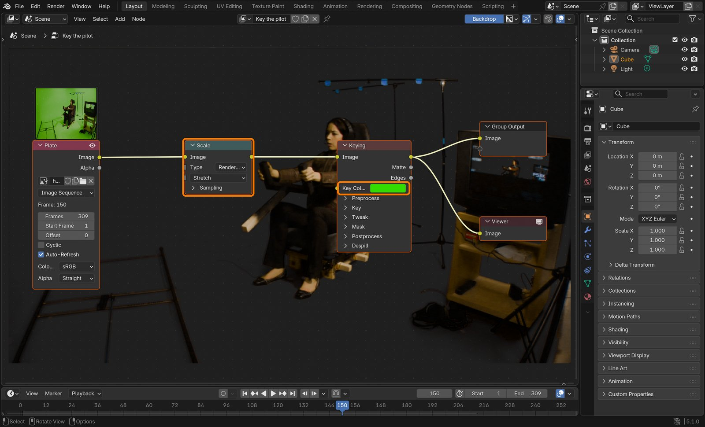
Boxes: the Scale settings and the Key Color.
2Add › Keying › Keying (not Chroma Key).
Click
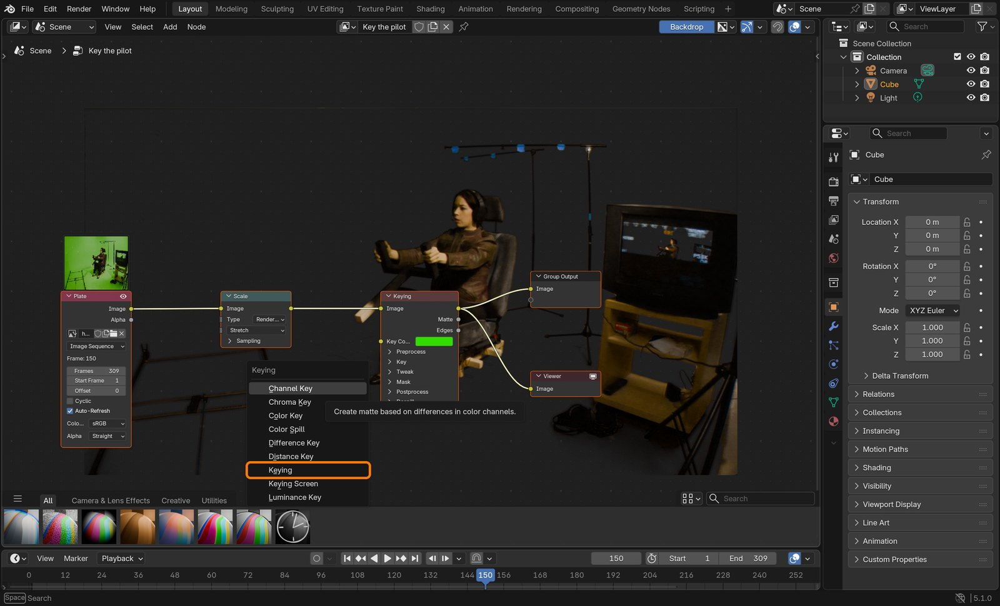
The Keying menu: choose Keying.It should look like this
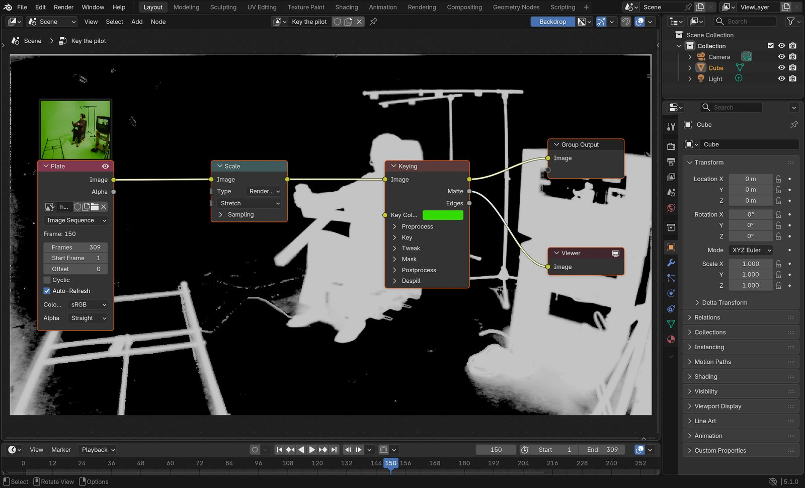
The Matte: screen black, pilot white, but the stands, rails and monitor are white too.
STEP CHECKLIST
GLOSSARY
Key: Removing a colour to make it transparent
Matte: Black-and-white picture: white is kept, black is removed
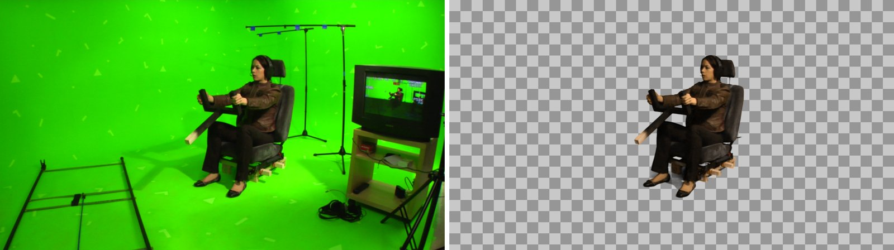
Frame 150: the plate, and the finished key (pilot and seat only) over a checkerboard.
WHYA key turns a colour into transparency. It only knows colour, so anything on set that is not green survives.
CHECKA Matte with a black screen and a solid white pilot.
FIXGrey patches in the screen: raise Black Level. Holes in her jacket: lower White Level.
WORKED EXAMPLE · DIFFERENT OBJECTThe same tree keys any green-screen clip, such as one of you filmed in class.
STRETCH (AFTER THE CHECK PASSES)Try Despill to remove the green tint on her hair.
Method basis: B2. Values and sequence are authored for this project.
06
Remove the junk with a garbage mask, and render the key
IN SHORTMask mode; draw; keyframe every 30 frames; Mask × Matte; Set Alpha Apply Mask; render PNG RGBA.
READ ALOUD
DOCUMENT: pilot_key.blend SELECT: A mask around the pilot and seat TOOLS / ROUTE: Image Editor › Mask mode · Add › Input › Mask · Math (Multiply) · Set Alpha (Apply Mask) · Render › Render Animation
Change an editor to the Image Editor, show the plate, and switch its mode to Mask. Click New.
Ctrl+click about 12 points around her and the seat, leaving a gap. Press Alt+C to close the shape.
The camera moves, so the mask must move too: with the mouse over the editor press I to key the mask shape, go 30 frames on, move the points, press I again. Repeat to frame 309.
In the compositor add Mask (your mask), a Math node set to Multiply (Keying Matte × Mask), and Set Alpha with Type Apply Mask (Image from Keying, Alpha from Math). Connect Set Alpha to the Group Output.
Output: PNG, RGBA, path //key/ws_. Render › Render Animation. You get 309 transparent PNGs.
Action by action: what to click (orange boxes), and what you should see
1Image Editor in Mask mode: a loose shape around her and the seat.
Click
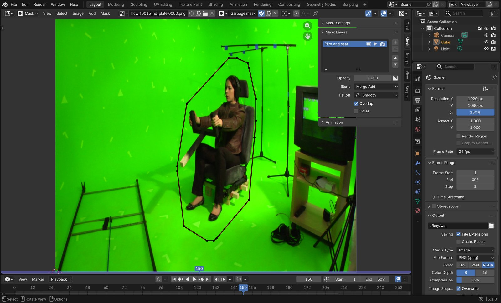
The mask “Pilot and seat” at frame 150.
2Mask node, Math (Multiply), Set Alpha (Apply Mask).
Click
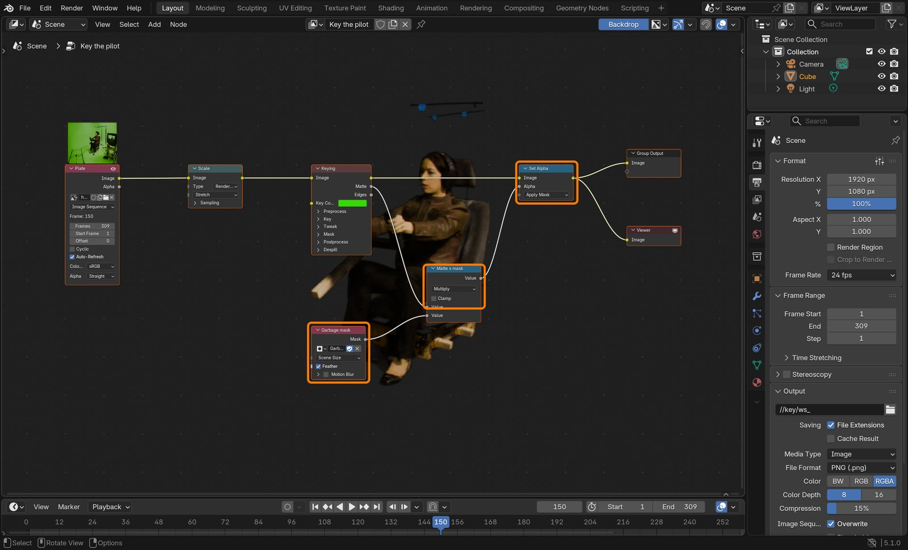
Boxes: Garbage mask, Matte × mask, Set Alpha. Behind the tree, only the pilot and seat remain.
Boxes: resolution, and the output path and format.
What went wrong when we built the demo: our demo’s garbage matte was computed from the footage instead of hand-drawn, to save time. The drawn, keyframed mask above does the same job; expect it to take most of a lesson.
STEP CHECKLIST
GLOSSARY
Garbage mask: A rough shape that throws away everything outside it
RGBA: Colour plus alpha (transparency)
WHYMattes multiply: she survives only where the key and your mask are both white. Rendering to PNG with alpha gives the 3D scene a clean pilot to place.
CHECK309 PNGs in key/, showing only the pilot and the seat on transparency.
FIXStands flicker back in? A mask keyframe is missing there: add one. Ghost of the stands? You used Replace Alpha: use Apply Mask.
WORKED EXAMPLE · DIFFERENT OBJECTGarbage masks are drawn loose: they only need to keep the junk out, not trace the person.
STRETCH (AFTER THE CHECK PASSES)Feather the mask edge (Mask node › Feather) so it never cuts her hair.
Method basis: B3 · B2. Values and sequence are authored for this project.
Session C · Lesson 3 · VFX shot library
Bring in the fighter.
Back in your tracking file, the 3D world now matches the studio. You import the fighter, split off its glass, and give it real materials.
TODAYImport and split (25 min), hull and glass materials (35 min), save and check (10 min).
07
Import the fighter and split off the canopy glass
IN SHORTImport; check the size; Tab, A, P › By Material; rename.
READ ALOUD
DOCUMENT: pilot_track.blend (your tracked, oriented file) SELECT: X-Fighter.obj from the Star Pack TOOLS / ROUTE: File › Import › Wavefront (.obj) · Tab · A · P › By Material
Open pilot_track.blend. File › Import › Wavefront (.obj) › Star_Pack/X-Fighter.obj.
Press Numpad . to frame it. Look at Dimensions in the sidebar: 1,184 m. The model was built in centimetres; you fix the size in Step 10, not now.
With it selected press Tab (Edit Mode), A (select all), P › By Material. Press Tab again.
You now have two objects. Rename them (double-click in the Outliner): Fighter hull and Canopy glass.
Action by action: what to click (orange boxes), and what you should see
1File › Import › Wavefront (.obj).
Click
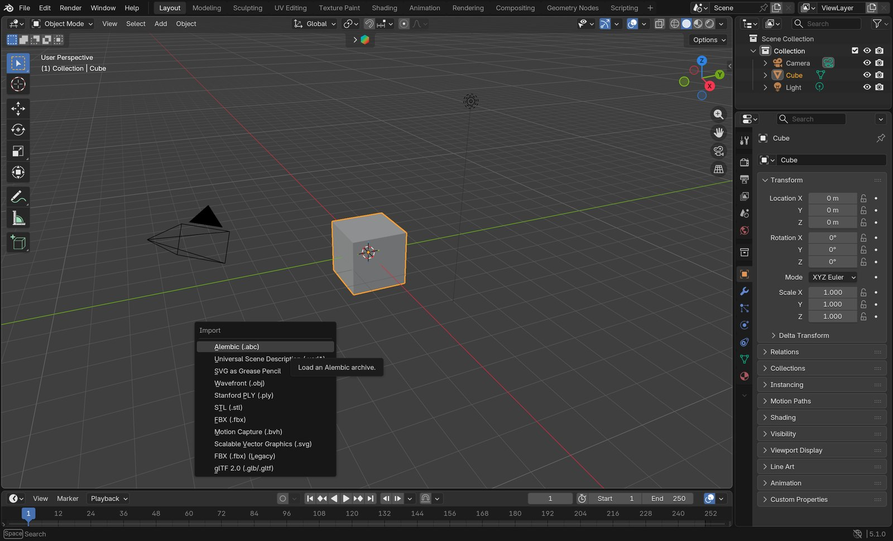
The Import menu.It should look like this
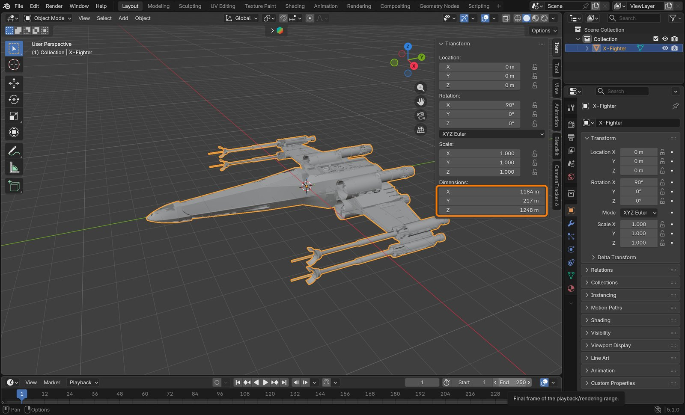
Imported: Dimensions 1,184 m (box). Way too big for now.
2Tab, A, then P: choose By Material.
Click
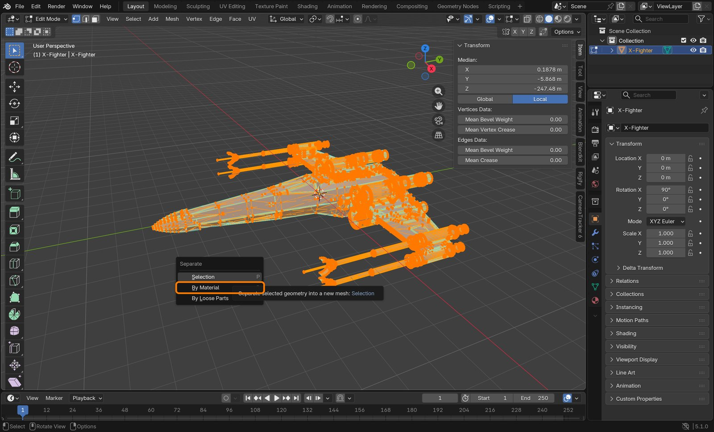
The Separate menu: By Material.It should look like this
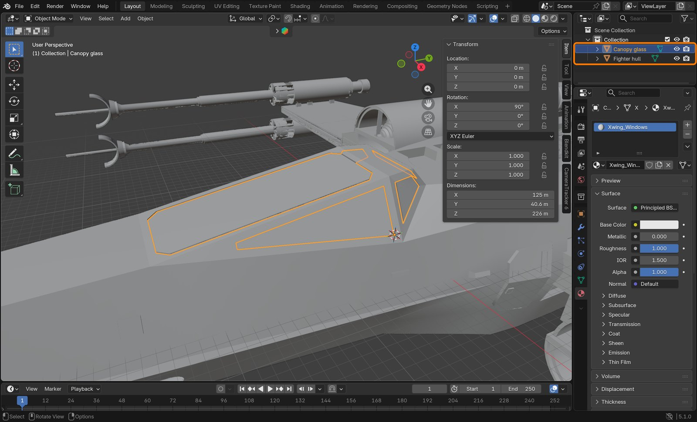
Two objects (box). Canopy glass is selected and outlined.
STEP CHECKLIST
GLOSSARY
Separate: Split part of a mesh into its own object
Material slot: Which material each face of a model uses
WHYThe glass needs its own see-through material. Separating by material splits the model exactly where the modeller put the glass.
CHECKTwo objects in the Outliner, and clicking Canopy glass outlines only the canopy.
FIXOnly one object after P? You were in Object Mode: press Tab first, then A, then P.
WORKED EXAMPLE · DIFFERENT OBJECTAny downloaded model with glass (a car, a helmet) splits the same way.
STRETCH (AFTER THE CHECK PASSES)Import Space_Fighter.obj too and look at how its parts are split.
Method basis: V1. Values and sequence are authored for this project.
08
Give the hull its textures and make the glass see-through
IN SHORTThree textures; Non-Color normal; glass alpha 0.11; Blended.
Select Fighter hull. In the Shader Editor add three Image Texture nodes from Star_Pack/Maps:
XWing_Diffuse_01 → Base Color. XWing_Normal_01 with Color Space Non-Color → a Normal Map node (Strength 0.7) → Normal. XWing_Illumination_01 → Emission Color, Emission Strength 12.
Principled BSDF: Metallic 0.2, Roughness 0.5.
Select Canopy glass. Base Color very pale blue (#D5DFE6), Roughness 0.04, Alpha 0.11.
Material properties › Settings › Render Method: Blended, so the glass is see-through in EEVEE.
Action by action: what to click (orange boxes), and what you should see
1Hull material.
Click
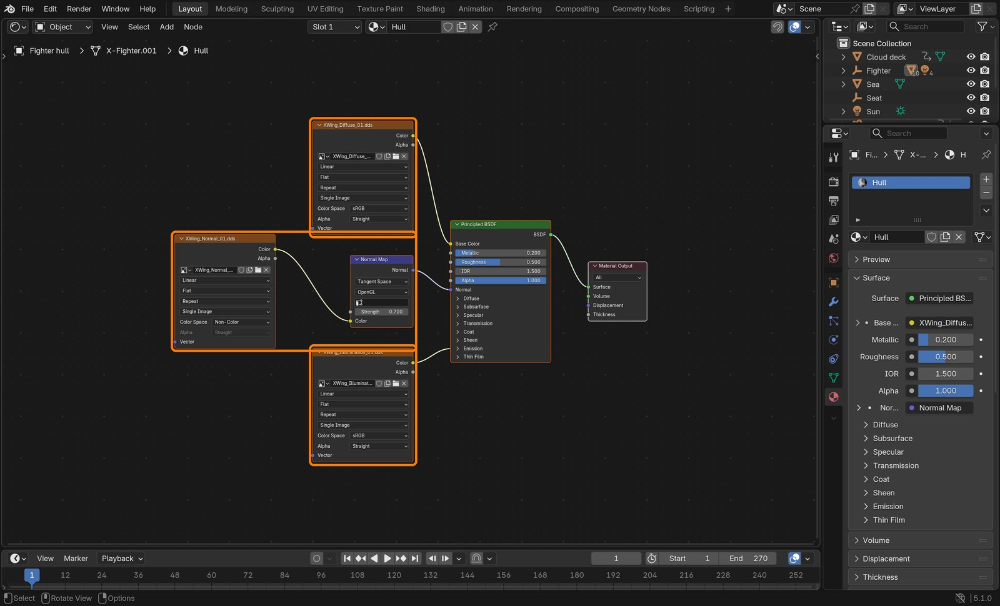
Boxes: Diffuse → Base Color; Normal (Non-Color) → Normal Map → Normal; Illumination → Emission.
2Glass material.
Click
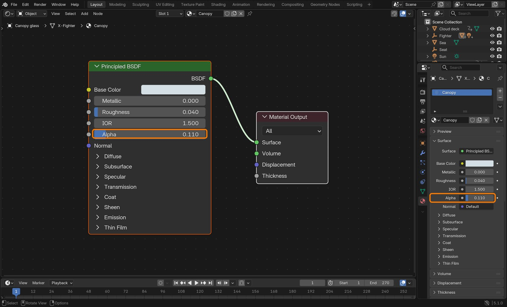
Boxes: Alpha 0.110 on the node and in the material panel.
STEP CHECKLIST
GLOSSARY
Normal map: A texture that fakes bumps by bending the lighting
Alpha: How opaque a surface is; 0 is invisible
WHYThe diffuse map paints the stripes and dirt; the normal map fakes panel detail; the illumination map lights the small glowing parts. Glass needs low alpha and Blended rendering to show the pilot behind it.
CHECKMaterial Preview shows red stripes and panel lines, and you can see into the cockpit through the glass.
FIXHull looks blotchy or purple? The normal texture must be Non-Color. Glass is solid white? Render Method is still Dithered or Alpha is 1.
WORKED EXAMPLE · DIFFERENT OBJECTCar paint is the same recipe: diffuse colour, normal for panel lines, low-alpha glass.
STRETCH (AFTER THE CHECK PASSES)Tint the glass faintly green or gold and compare.
Method basis: V1. Values and sequence are authored for this project.
Session D · Lesson 4 · VFX shot library
Seat the pilot inside the ship.
Her keyed footage goes on a flat card that the camera carries, always at her distance. The ship is then built around that spot, so the hull hides her legs and the canopy goes over her head.
TODAYThe footage card (20 min), the card rig and driver (25 min), fit the ship (25 min).
09
Put her footage on a card
IN SHORTSeat empty; Mesh Plane from the first PNG; check Image Sequence; scrub.
Add › Empty › Sphere, name it Seat, Location 0, 0, 0.8: the middle of her body (the origin is under her seat).
Add › Image › Mesh Plane. Pick key/ws_0001.png. Options: Shader Emission, Strength 1.4, Size Mode Absolute, Height 1 m. Name it Pilot footage card.
Open the card’s material in the Shader Editor. On the Image Texture node check: Image Sequence, Frames 309, Start 1, Auto Refresh ticked.
Scrub the timeline: the card must change with every frame.
Action by action: what to click (orange boxes), and what you should see
1Add › Image › Mesh Plane.
Click
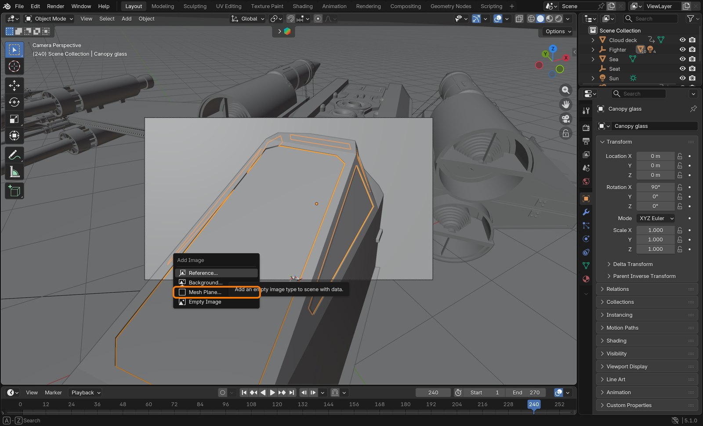
The Add Image menu: Mesh Plane.
2The card’s Image Texture node.
Click
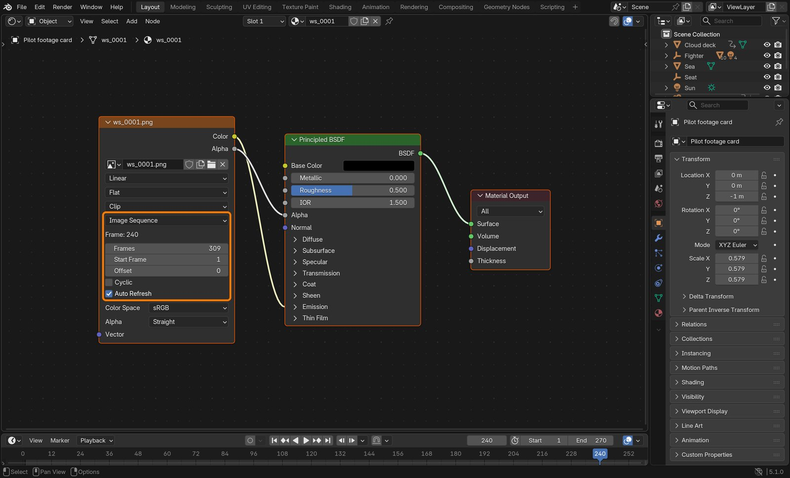
Box: Image Sequence, Frames 309, Start Frame 1, Auto Refresh.
Wrong vs right
Wrong
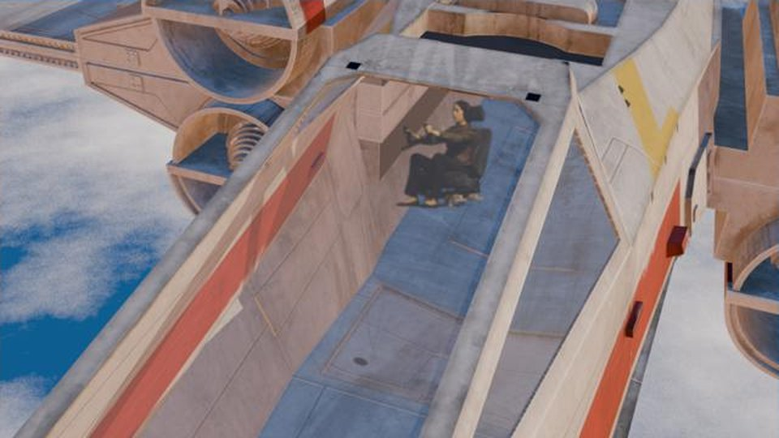
Frame 240 with the card stuck on frame 1: a tiny wide-shot pilot.Right
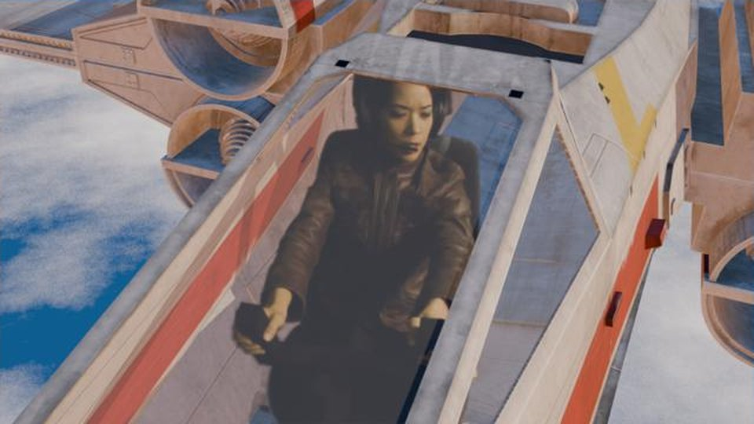
Frame 240 with the sequence playing: the close-up fills the cockpit.
What went wrong when we built the demo: Blender 5.1 imported the image sequence as a single image, so the card showed frame 1 for the whole shot. Setting Source to Image Sequence fixed it.
STEP CHECKLIST
GLOSSARY
Empty: An object with no surface, used as a marker or handle
Emission: A shader that glows; shows footage unchanged
WHYEmission shows the footage exactly as filmed, ignoring the 3D lights. The empty marks the point the card must always sit at.
CHECKAt frame 240 the card shows the close-up of her, not the wide shot.
FIXThe card never changes? Its Source says Single Image: switch it to Image Sequence and set Frames 309.
WORKED EXAMPLE · DIFFERENT OBJECTSame trick puts a filmed explosion or a crowd on cards in a 3D scene.
STRETCH (AFTER THE CHECK PASSES)Turn Emission Strength up and down: what does it do to how well she matches?
Method basis: B4. Values and sequence are authored for this project.
10
Make the camera carry the card at her distance
IN SHORTCard rig parented to camera; card at −1 m, scale 35/34×9/16; Distance driver; copy to Y and Z.
READ ALOUD
DOCUMENT: pilot_track.blend SELECT: Card rig empty, the card, the camera TOOLS / ROUTE: Ctrl+P › Object (Without Inverse) · Object properties · right-click Scale › Add Driver
Add an empty named Card rig. Click it, Shift+click the camera, Ctrl+P › Object (Without Inverse). Set its Location and Rotation to 0.
Parent the card to Card rig the same way. Card: Location 0, 0, −1, Rotation 0, Scale: type 35/34*9/16 in X, Y and Z (= 0.579). At 1 m from the lens it now exactly fills the frame.
Select Card rig. Right-click Scale X › Add Driver. In the popover: Type Scripted Expression, Expression d.
Name the variable d, type Distance: Object 1 Seat, Object 2 Tracked camera (the solved camera), both World Space.
Right-click Scale X › Copy Driver, then Paste Driver on Scale Y and Z. The scale fields turn purple.
Action by action: what to click (orange boxes), and what you should see
1The card selected: its parent chain and values.
Click
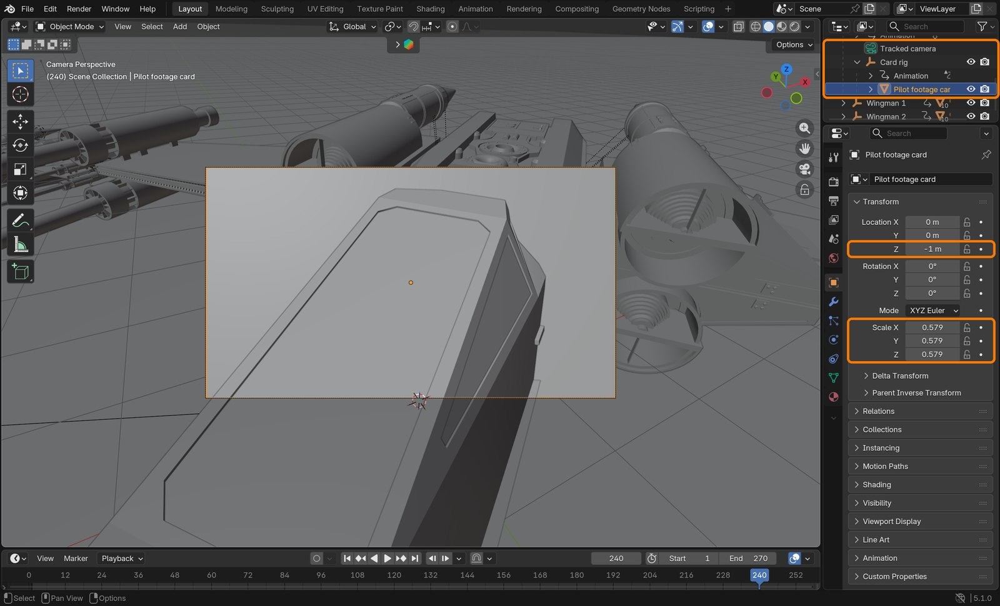
Boxes: Tracked camera › Card rig › Pilot footage card; Location Z −1 m; Scale 0.579.
2Card rig selected. Right-click Scale › Edit Driver… (Add Driver the first time).
Click
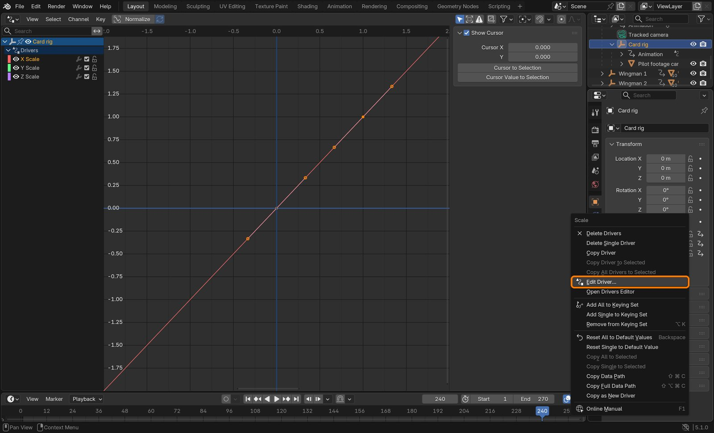
The right-click menu on the purple Scale fields.It should look like this
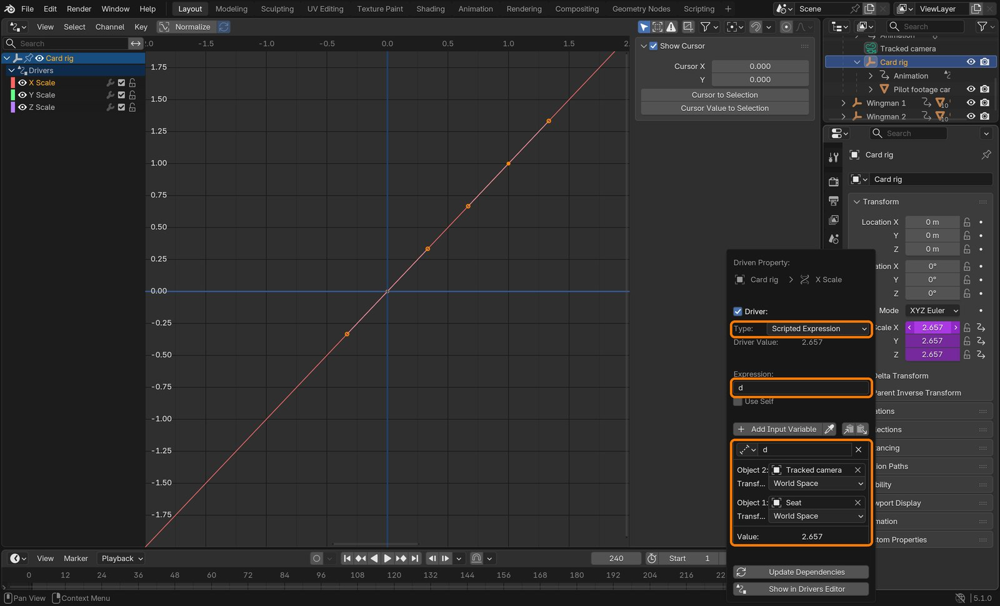
The driver: Scripted Expression, expression d, a Distance variable from Seat to Tracked camera, value 2.657 at frame 240.
STEP CHECKLIST
GLOSSARY
Driver: A rule that sets a value from other values
Parent: An object that carries its children when it moves
WHYScaling the rig by her distance pushes the card out to exactly where she is and makes it bigger by the same amount, so it still fills the frame. One driver keeps that true on all 309 frames.
CHECKAt frame 240 Card rig’s scale reads about 2.66 (she is 2.66 m from the lens), and through the camera her footage lines up with the plate.
FIXCard drifts off-centre? It was parented with an inverse: redo with Object (Without Inverse) and zero its rotation.
WORKED EXAMPLE · DIFFERENT OBJECTDrivers also open doors when a character comes near, or spin wheels by how far a car has moved.
STRETCH (AFTER THE CHECK PASSES)Why 35/34? 35 mm sensor, 34 mm lens: the frame is 35/34 m wide at 1 m. Explain it in your log.
Method basis: B4. Values and sequence are authored for this project.
11
Fit the ship around her
IN SHORTFighter empty; parent; scale 0.01; rotate to her facing; position; check three frames.
READ ALOUD
DOCUMENT: pilot_track.blend SELECT: A Fighter empty carrying the hull and glass TOOLS / ROUTE: Add › Empty · Ctrl+P › Object (Keep Transform) · N sidebar › Item
Add an empty named Fighter. Select hull and glass, then Fighter last, Ctrl+P › Object (Keep Transform).
Fighter: Scale 0.01 (centimetres to metres: the ship is now 12 m long).
Rotation Z: turn the ship until its nose points the way she faces. Demo: −49°.
Move it until the seat in the cockpit sits under her. Demo: Location 0.53, 0.46, 0.6. Look through the camera at frames 1, 120 and 240 in Material Preview.
Her legs and the chair base should be hidden by the hull, and the canopy frame should pass in front of her.
Action by action: what to click (orange boxes), and what you should see
1Fighter selected: its values in the sidebar.
Click
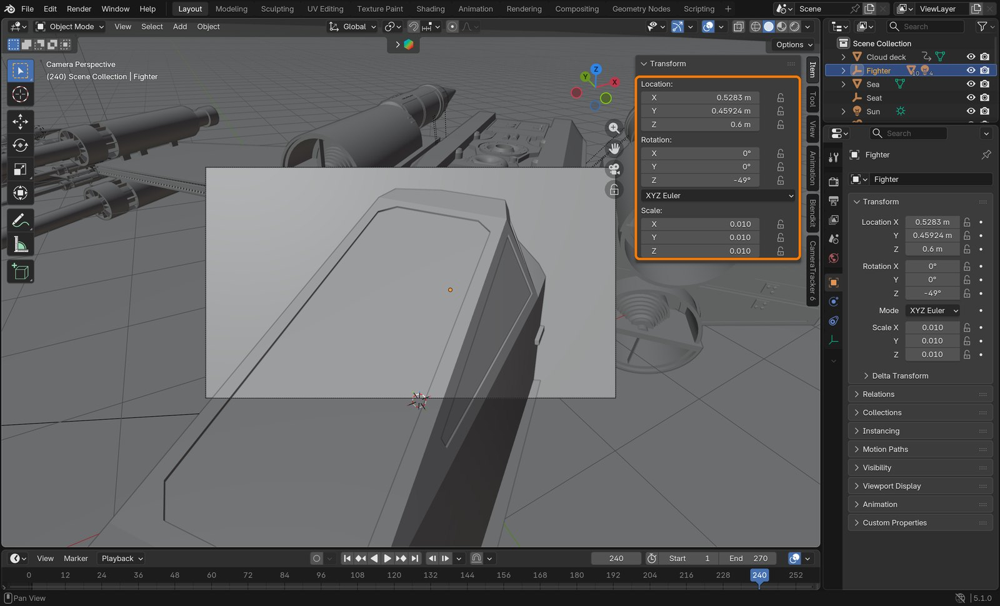
Box: Location 0.53, 0.46, 0.6; Rotation Z −49°; Scale 0.01.It should look like this
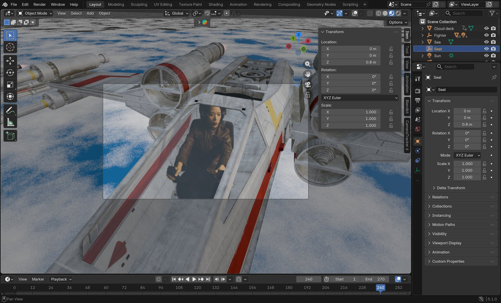
Material Preview through the camera at frame 240: she sits in the cockpit.
What went wrong when we built the demo: the first try used the ship’s default heading. Her body faced about 40° away from the nose, so she looked like she sat sideways. Turning the ship to −49° fixed it.
STEP CHECKLIST
GLOSSARY
Keep Transform: Parent without the child jumping to a new place
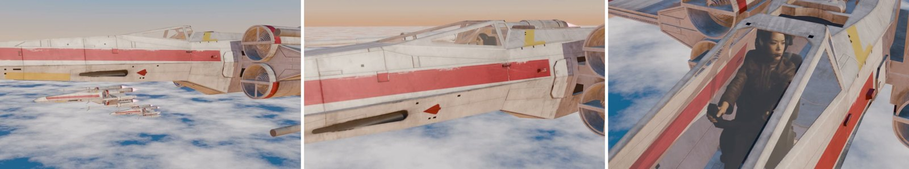
Three frames of the finished shot: the opening along the hull, rising over the canopy, and looking down at her.
WHYThe ship is the right size because the scene has real metres. Rotating it to match her body is what makes her look like she is flying it.
CHECKAt every check frame she sits in the cockpit: hull in front of her legs, canopy around her.
FIXShe floats above the ship? Lower Fighter’s Z. She faces sideways in the cockpit? Change Rotation Z.
WORKED EXAMPLE · DIFFERENT OBJECTAny vehicle works the same way: a car seat, a spaceship, a roller coaster.
STRETCH (AFTER THE CHECK PASSES)Duplicate Fighter twice (Alt+D) as wingmen, 30 m and 60 m off to the side.
Method basis: V1. Values and sequence are authored for this project.
Session E · Lesson 5 · VFX shot library
Sky, thrusters, render.
A white ship on a grey world looks washed out. Golden light, moving clouds and glowing thrusters make it a shot, and then the director gets a say.
TODAYWorld, sun and clouds (20 min), thrusters and bloom (15 min), render and director’s card (35 min).
12
Golden-hour sky, sun and a moving cloud deck
IN SHORTWorld gradient; warm sun; cloud plane with noise alpha; animate it.
READ ALOUD
DOCUMENT: pilot_track.blend SELECT: World nodes, the Sun, a big plane TOOLS / ROUTE: Shader Editor › World · Sun light › Data · Add › Mesh › Plane
Shader Editor › World. Build: Texture Coordinate (Generated) → Separate XYZ (Z) → Color Ramp → Background (Strength 1.5).
Ramp stops: 0.00 warm orange #FFB070 · 0.04 peach #F8CFA6 · 0.18 pale blue #8FB4DC · 0.60 deep blue #2A5A9A. Z is “how far up you look”, so the warm band sits on the horizon.
Add a Sun: Strength 6, Color warm (#FFC48A), Angle 1.5°, low and from the side.
Add a Plane, size 60,000 m, Z −420: the Cloud deck. Material: Noise Texture (Object coordinates, Scale 0.002, Detail 9, Roughness 0.62) → Color Ramp (0.40 black, 0.60 white) → Alpha. Render Method Dithered.
Key its location at frame 1 and frame 270, moved about 1,200 m backwards along the ship: the clouds slide past at about 110 m/s.
Action by action: what to click (orange boxes), and what you should see
1World nodes.
Click
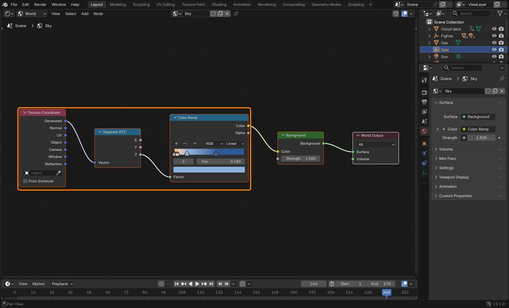
Box: Texture Coordinate (Generated) → Separate XYZ (Z) → Color Ramp → Background.
2The Sun’s light settings.
Click
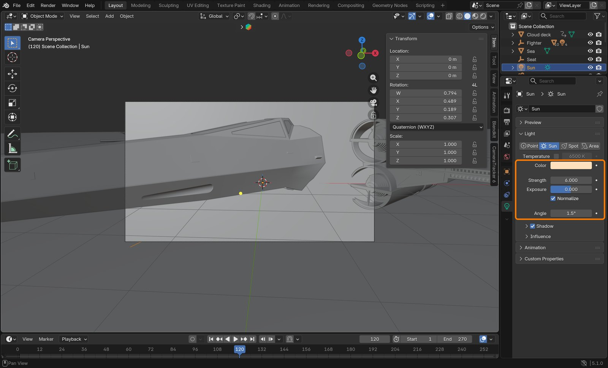
Box: warm Color, Strength 6, Angle 1.5°.
3Cloud deck material.
Click
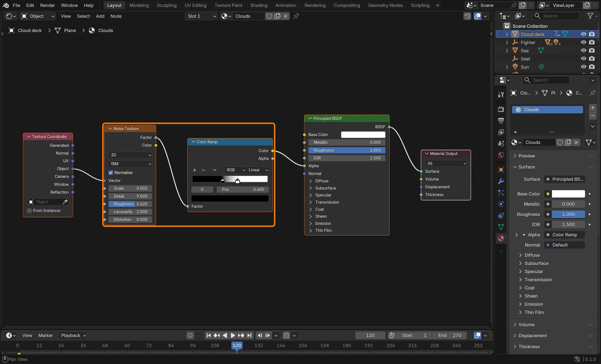
Box: Noise Texture → Color Ramp → Alpha.
What went wrong when we built the demo: two first tries failed: the sky came out flat orange because we used the wrong Texture Coordinate output, and the clouds went muddy brown when the sun was too low to light their tops.
STEP CHECKLIST
GLOSSARY
Color Ramp: Maps a value from 0–1 to colours
Golden hour: Low, warm sunlight just after sunrise or before sunset
WHYColour comes from light, not from the model: warm sun and a cool sky give the white hull orange highlights and blue shadows. Moving clouds are what say “flying”.
CHECKThe horizon glows warm, the sky is blue overhead, and the clouds slide under the ship when you play the timeline.
FIXWhole sky one colour? Check the Texture Coordinate output is Generated. Clouds look brown? Raise the sun higher.
WORKED EXAMPLE · DIFFERENT OBJECTThe same gradient world works for a sunset behind a car advert.
STRETCH (AFTER THE CHECK PASSES)Make it night: dark ramp, cold moonlight, a few emissive stars.
Method basis: D1. Values and sequence are authored for this project.
13
Thrusters and bloom
IN SHORTEmission discs; gradient plumes; parent; Glare Bloom.
READ ALOUD
DOCUMENT: pilot_track.blend SELECT: A disc and a cone in each nozzle; the compositor TOOLS / ROUTE: Add › Mesh › Circle (Fill N-Gon) · Add › Mesh › Cone · Compositing › Add › Filter › Glare
In each of the four nozzles add a Circle (Fill Type N-Gon) with an Emission material: pink-orange, Strength 40.
Add a Cone behind each nozzle pointing backwards: the plume. Material: Texture Coordinate (Generated) → Separate XYZ (Z) → Math Subtract (1 − Z) → Math Power (2.2) → Factor of a Mix Shader between Transparent and Emission (pink, Strength 14). Render Method Blended.
Parent all eight to the Fighter empty, so the wingmen copies get them too.
Action by action: what to click (orange boxes), and what you should see
1Plume material.
Click
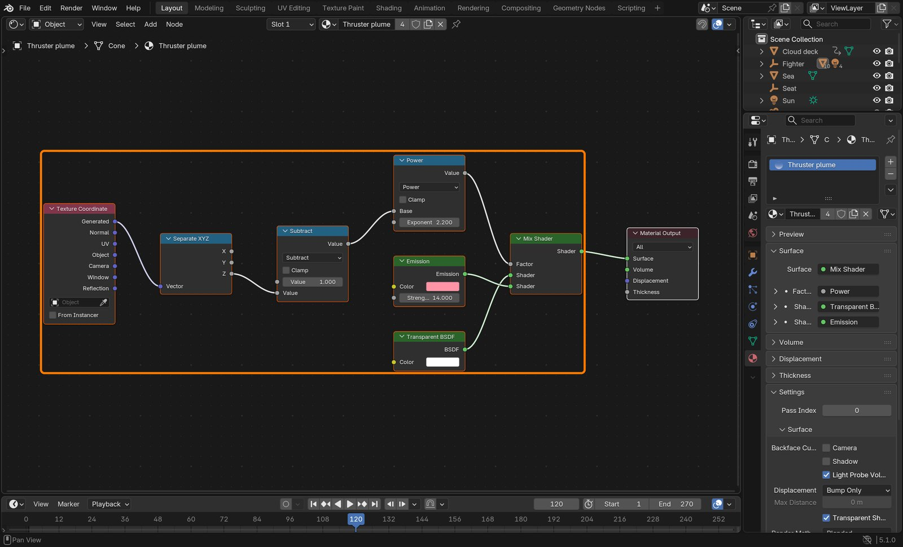
Box: Generated Z → Subtract → Power → Mix Shader (Transparent, Emission).
2Compositor.
Click
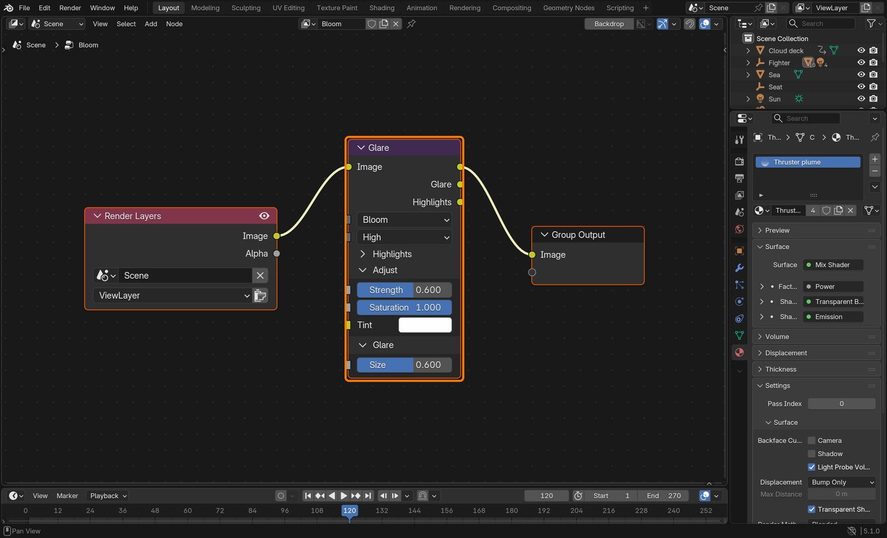
Box: the Glare node set to Bloom.
STEP CHECKLIST
GLOSSARY
Bloom: Glow that spreads from the brightest parts of an image
Mix Shader: Blends two shaders by a factor
WHYBright emission plus bloom is how glowing light looks on camera. The gradient makes the plume fade instead of ending in a hard edge.
CHECKA rendered frame shows pink thrusters with soft glow, fading plumes, and the hull still crisp.
FIXPlume a solid cone? The Mix factor is the wrong way round: swap the two shader inputs.
WORKED EXAMPLE · DIFFERENT OBJECTThe same disc-plus-bloom trick makes car headlights and neon signs glow.
STRETCH (AFTER THE CHECK PASSES)Animate the thruster Strength flickering slightly with a Noise modifier.
Method basis: B5 · D1. Values and sequence are authored for this project.
14
Practical check: render, then the director’s change
IN SHORTVideo output; render; read the card; change a copy; render; explain; credit.
READ ALOUD
DOCUMENT: Your finished scene · the director’s card SELECT: Whatever the card requires TOOLS / ROUTE: Output properties · Render › Render Animation · your own decisions
Output properties: Media Type Video, FFmpeg, MPEG-4, H.264, path //render/xwing_, frames 1–270.
Render › Render Animation. Watch it all the way through: does she ever slide, pop, or show through the hull?
Read your director’s card (below). Decide which part of the scene it touches, change a copy of the file and render again.
Screen both versions and explain: one tracking decision, one keying decision, one lighting decision.
Credit the plate (Hollywood Camera Work) and the models (Video Copilot) in your evidence.
Action by action: what to click (orange boxes), and what you should see
1Output properties for video.
Click
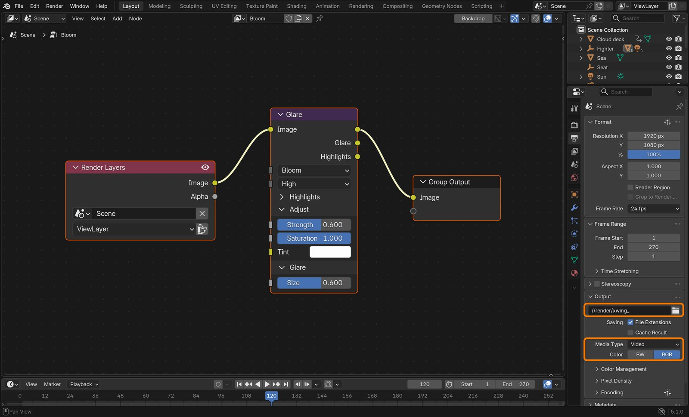
Boxes: the output path, and Media Type Video.It should look like this
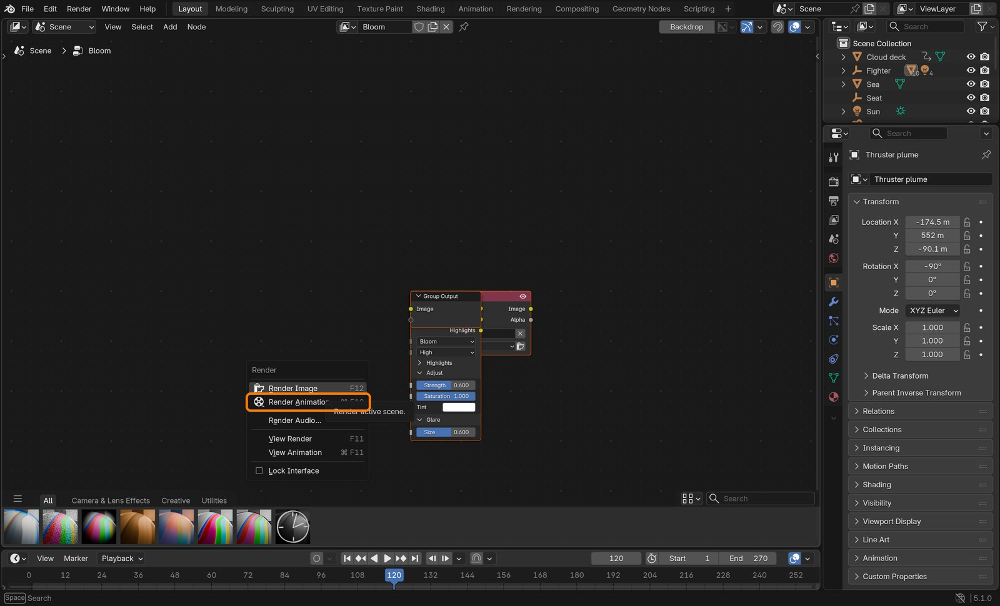
Render › Render Animation.
Card
The director says
1 · Night run
“Night: stars, cold moonlight, brighter thrusters, and a glow from the instruments on her face.”
2 · Storm
“Fly them into a storm: dark clouds, rain streaks on the canopy, lightning flashes.”
3 · Desert planet
“Low over a desert, not clouds. Harsh white sun.”
4 · Speed
“It feels slow. Faster clouds, camera shake, motion blur.”
Independent evidence: the main achievement evidence for this tutorial.
STEP CHECKLIST
GLOSSARY
Render: Turning the 3D scene into finished frames
WHYBecause the shot is built in parts (track, key, card, ship, world, glow), a director’s change only touches one part.
CHECKTwo renders, the card’s change made, a three-decision explanation and credits.
FIXStuck? Name the part the card touches first. (Independent step: the Coach can explain tools but not decide your changes.)
WORKED EXAMPLENone today: this is independent evidence. Use the success criteria.
STRETCH (AFTER THE CHECK PASSES)Take two cards at once.
Method basis: B5. Values and sequence are authored for this project.
Before you submit
Student QA.
Evidence conversation
Keep it short and specific.
SENTENCE FRAMESMy solve error was ___ after I ___. · The card stays the right size because ___. · For the director’s card I changed the ___ using ___.
Figures marked Illustration are drawn, not screenshots. Step values are starting points authored for this project. Draft for teacher review; not yet classroom-piloted.